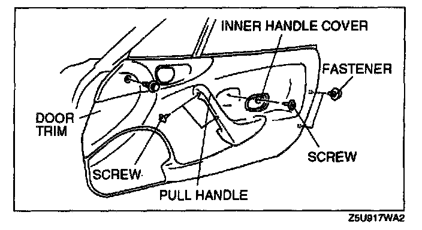
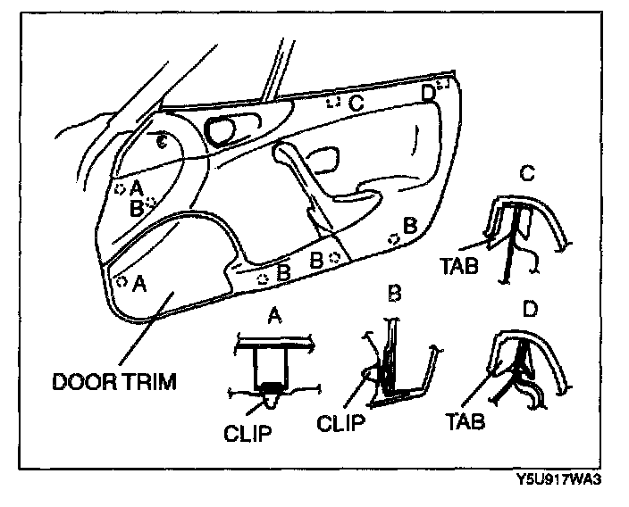

Front Door Panel: Service and Repair
DOOR TRIM REMOVAL/INSTALLATION
1. Remove the screw.
2. Remove the inner handle cover.
3. Remove the fasteners.

4. Pull the door trim, then disengage clips A and B from the body.
5. Lift the door trim, then disengage tabs C and D from the body.
6. Install in the reverse order of removal.